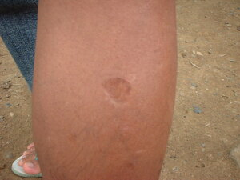

tulak 
/tulak/
n.
“scar”
n.
scar
Ka seini ne lalag iyan sika se napalian ne neulian e ne migbabateg e wey warad tubuì te bulbul.
Kenà a egpeupew su due tulak te ulu.
I dont want to be a bald cause i have scar in my head.
Syn. bateg
Eng. scar
Tag. péklat; pílat
Ceb. palì
Ilo.: píglat
OCM: Theory of Disease (753)
DDP: Skin (2.1.4)
Online dict status: -
Usage level: M
v.
for the skin (egtutulak, migtutulak/intutulak, tutulak, actor, eg><ø-rdpCV-) to form a scar
Eng. scar, to form
DDP: Skin (2.1.4)
Online dict status: -
Usage level: M
v.
for someone's skin (egkatulakan, natulakan, agent, egkA><an-) to have scar
Eng. scar, to heve
Online dict status: -
Usage level: M
Updated by: RJH,AAA,QDL,RAA,RJH
Last updated: 21/Dec/2011
This page last updated: 19/May/2012
Copyright © 2009-2010, Matigsalug Language Christian Association, Inc